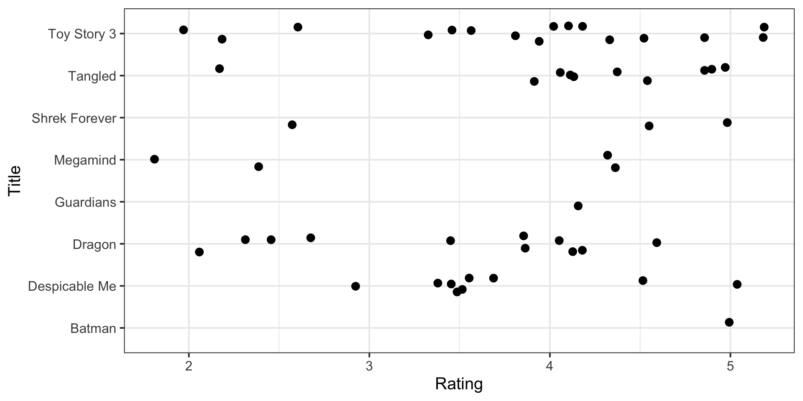
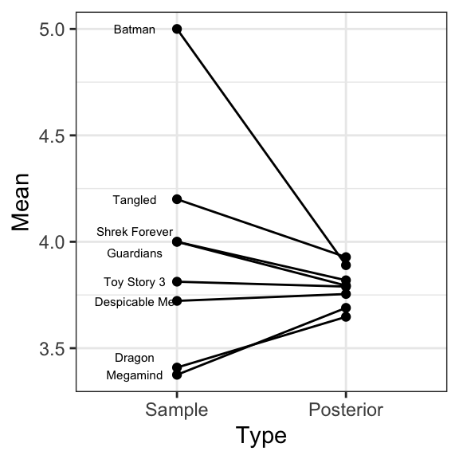

library(tidyverse)
MovieRatings <- read.csv("2010_animation_ratings.csv", header = TRUE, sep = ",")
MovieRatings %>%
mutate(Title = as.character(title),
Title = recode(Title,
"Shrek Forever After (a.k.a. Shrek: The Final Chapter) (2010)" = "Shrek Forever",
"How to Train Your Dragon (2010)" = "Dragon",
"Toy Story 3 (2010)" = "Toy Story 3",
"Tangled (2010)" = "Tangled",
"Despicable Me (2010)" = "Despicable Me",
"Legend of the Guardians: The Owls of Ga'Hoole (2010)" = "Guardians",
"Megamind (2010)" = "Megamind",
"Batman: Under the Red Hood (2010)" = "Batman")) ->
MovieRatingsHierarchical Models
Day 5
Note that the example in this lecture is from Chapter 10.2 of Probability and Bayesian Modeling book
Introduction: Observations in Groups
The Normal Model & Normal Regression
When you have continuous outcomes, you can use a normal model: \[\begin{equation*} Y_i \mid \mu, \sigma \overset{i.i.d.}{\sim} \textrm{Normal}(\mu, \sigma), \,\,\, i = 1, \cdots, n. \end{equation*}\]
When you have predictor variables, \(\{x_{i1}, \cdots, x_{ip}\}\); you can specify an observation specific mean: \[\begin{equation*} Y_i \mid \mu_i, \sigma \overset{ind}{\sim} \textrm{Normal}(\mu_i, \sigma), \,\,\, i = 1, \cdots, n, \end{equation*}\] where \[\begin{equation*} \mu_i = \beta_0 + \beta_1 x_{i1} + \beta_2 x_{i2} + \cdots, \beta_p x_{ip}. \end{equation*}\]
Observations are assumed independent.
When Observations Are Not Necessarily Independent
Observations can be dependent in several ways
Observations are nested in groups:
- Students’ test scores from multiple schools
- Ratings of movies of different genres
- Ratings of dramas of different schedules
- Death rates of hospitals
Discussion question
Can you think of additional examples of observations in groups?
Example: Ratings of Animation Movies
Ratings of Animation Movies
Example from Chapter 10.2 of Probability and Bayesian Modeling book
MovieLens: personalized movie recommendation for users
In one study, a sample on movie ratings for 8 animation movies released in 2010, total 55 ratings
Each rating is for a movie completed by a user; some movies have many ratings while others have few
A natural grouping of these 55 ratings: by movie title
Plot of Ratings by Title

Summary Statistics of Ratings by Title
| Movie Title | Mean | SD | N |
|---|---|---|---|
| Batman: Under the Red Hood | 5.00 | 1 | |
| Despicable Me | 3.72 | 0.62 | 9 |
| How to Train Your Dragon | 3.41 | 0.86 | 11 |
| Legend of the Guardians | 4.00 | 1 | |
| Megamind | 3.38 | 1.31 | 4 |
| Shrek Forever After | 4.00 | 1.32 | 3 |
| Tangled | 4.20 | 0.89 | 10 |
| Toy Story 3 | 3.81 | 0.96 | 16 |
Modeling Challenges
- Approach 1 - separate estimates for each movie \(j\): \[\begin{equation*}
Y_{1j}, \cdots, Y_{n_j j} \overset{i.i.d.}{\sim} \textrm{Normal}(\mu_j, \sigma_j)
\end{equation*}\]
- No relation among groups; groups with small sample size might suffer (e.g., \(n_j = 1\))
- Approach 2 - combined estimates for all \(J\) movies: \[\begin{equation*}
Y_{ij} \overset{i.i.d.}{\sim} \textrm{Normal}(\mu, \sigma)
\end{equation*}\]
- Differences in groups are ignored
Potential Solutions
- Something in between - hierarchical/multilevel modeling
- Pooling information across groups
- Achieved through a two-stage prior
A Hierarchical Model with Random \(\sigma\)
The Sampling Model
Without loss of generality, assume a group-specific normal model for movie \(j\): \[\begin{eqnarray} Y_{ij} \overset{i.i.d.}{\sim} \textrm{Normal}(\mu_j, \sigma) \end{eqnarray}\] where \(i = 1, \cdots, n_j\) and \(n_j\) is the number of observations in group \(j\)
Model parameters: \(\{\mu_1, \cdots, \mu_J, \sigma\}\)
Discussion question
Is a commonly shared \(\sigma\) reasonable? If not, what can you do?
A Two-Stage Prior for \(\{\mu_1, \cdots, \mu_J\}\): Stage 1
All movies are animation movies, we could assume that the mean ratings are similar across movies
First stage: the same normal prior distribution for each mean \(\mu_j\) \[\begin{equation} \mu_j \mid \mu, \tau \sim \textrm{Normal}(\mu, \tau) \end{equation}\]
This prior allows information pooled across movies (groups)
- If \(\tau\) is large, the \(\mu_j\)’s are very different a priori \(\rightarrow\) modest pooling in parameter estimation
- If \(\tau\) is small, the \(\mu_j\)’s are very similar a priori \(\rightarrow\) large pooling in parameter estimation
\(\mu\) and \(\tau\): hyperparameters, and treated random
A Two-Stage Prior for \(\{\mu_1, \cdots, \mu_J\}\): Stage 2
Second stage: weakly informative hyperpriors for hyperparameters \[\begin{eqnarray} \mu &\sim& \textrm{Normal}(3, 1) \\ \tau &\sim& \textrm{Cauchy}(0, 1) \end{eqnarray}\]
After posterior inference:
- The posterior of \(\mu\) is informative about an average mean rating
- The posterior of \(\tau\) is informative about the variation among the \(\mu_j\)’s
Prior for \(\sigma\) and Graphical Representation
- Weakly informative prior for \(\sigma\): \[\begin{eqnarray} \sigma &\sim& \textrm{Cauchy}(0, 1) \end{eqnarray}\]

Discussion question
Describe how the graphical representation corresponds to the hierarchical model. What parameters/hyperparameters are shared among what?
MCMC Estimation and Diagnostics
Fitting The Model
Use the
brm()function withfamily = gaussianUse
rating ~ 1 + 1 | Titleexpression for model specification
library(brms)
ml_fit <- brm(data = MovieRatings, family = gaussian,
rating ~ 1 + (1 | Title),
prior = c(prior(normal(3, 1), class = Intercept),
prior(cauchy(0, 1), class = sd),
prior(cauchy(0, 1), class = sigma)),
iter = 20000, warmup = 10000, thin = 10, chains = 2,
seed = 1234)
SAMPLING FOR MODEL '8d99263e256d0bb71292ae7882b1103c' NOW (CHAIN 1).
Chain 1:
Chain 1: Gradient evaluation took 3e-05 seconds
Chain 1: 1000 transitions using 10 leapfrog steps per transition would take 0.3 seconds.
Chain 1: Adjust your expectations accordingly!
Chain 1:
Chain 1:
Chain 1: Iteration: 1 / 20000 [ 0%] (Warmup)
Chain 1: Iteration: 2000 / 20000 [ 10%] (Warmup)
Chain 1: Iteration: 4000 / 20000 [ 20%] (Warmup)
Chain 1: Iteration: 6000 / 20000 [ 30%] (Warmup)
Chain 1: Iteration: 8000 / 20000 [ 40%] (Warmup)
Chain 1: Iteration: 10000 / 20000 [ 50%] (Warmup)
Chain 1: Iteration: 10001 / 20000 [ 50%] (Sampling)
Chain 1: Iteration: 12000 / 20000 [ 60%] (Sampling)
Chain 1: Iteration: 14000 / 20000 [ 70%] (Sampling)
Chain 1: Iteration: 16000 / 20000 [ 80%] (Sampling)
Chain 1: Iteration: 18000 / 20000 [ 90%] (Sampling)
Chain 1: Iteration: 20000 / 20000 [100%] (Sampling)
Chain 1:
Chain 1: Elapsed Time: 0.43223 seconds (Warm-up)
Chain 1: 0.52341 seconds (Sampling)
Chain 1: 0.95564 seconds (Total)
Chain 1:
SAMPLING FOR MODEL '8d99263e256d0bb71292ae7882b1103c' NOW (CHAIN 2).
Chain 2:
Chain 2: Gradient evaluation took 6e-06 seconds
Chain 2: 1000 transitions using 10 leapfrog steps per transition would take 0.06 seconds.
Chain 2: Adjust your expectations accordingly!
Chain 2:
Chain 2:
Chain 2: Iteration: 1 / 20000 [ 0%] (Warmup)
Chain 2: Iteration: 2000 / 20000 [ 10%] (Warmup)
Chain 2: Iteration: 4000 / 20000 [ 20%] (Warmup)
Chain 2: Iteration: 6000 / 20000 [ 30%] (Warmup)
Chain 2: Iteration: 8000 / 20000 [ 40%] (Warmup)
Chain 2: Iteration: 10000 / 20000 [ 50%] (Warmup)
Chain 2: Iteration: 10001 / 20000 [ 50%] (Sampling)
Chain 2: Iteration: 12000 / 20000 [ 60%] (Sampling)
Chain 2: Iteration: 14000 / 20000 [ 70%] (Sampling)
Chain 2: Iteration: 16000 / 20000 [ 80%] (Sampling)
Chain 2: Iteration: 18000 / 20000 [ 90%] (Sampling)
Chain 2: Iteration: 20000 / 20000 [100%] (Sampling)
Chain 2:
Chain 2: Elapsed Time: 0.441583 seconds (Warm-up)
Chain 2: 0.47073 seconds (Sampling)
Chain 2: 0.912313 seconds (Total)
Chain 2: Saving Posterior Draws
Save
postas a matrix of simulated posterior drawsThe model parameters: \(\{\mu, \tau, \mu_1, \cdots, \mu_8, \sigma\}\)
# A draws_df: 1000 iterations, 2 chains, and 13 variables
b_Intercept sd_Title__Intercept sigma r_Title[Batman,Intercept]
1 3.7 0.170 1.01 -0.36036
2 3.9 0.164 1.10 -0.10980
3 3.8 0.274 1.04 -0.05204
4 4.0 0.156 0.99 0.15491
5 3.8 0.151 0.85 0.12009
6 3.6 0.274 0.84 -0.21887
7 3.7 0.514 0.88 0.16283
8 3.6 0.044 0.95 -0.00074
9 4.0 0.080 0.88 -0.09213
10 3.8 0.083 0.85 0.04069
r_Title[Despicable.Me,Intercept] r_Title[Dragon,Intercept]
1 0.148 -0.186
2 0.036 -0.048
3 0.025 -0.226
4 -0.099 -0.054
5 -0.031 -0.172
6 0.075 -0.030
7 0.068 -0.547
8 -0.055 0.016
9 -0.079 -0.109
10 -0.084 0.089
r_Title[Guardians,Intercept] r_Title[Megamind,Intercept]
1 0.148 -0.012
2 0.057 0.092
3 -0.071 -0.034
4 -0.017 -0.155
5 -0.166 0.051
6 0.180 -0.076
7 0.341 -0.364
8 0.067 -0.024
9 0.108 -0.080
10 -0.103 -0.057
# ... with 1990 more draws, and 5 more variables
# ... hidden reserved variables {'.chain', '.iteration', '.draw'}Posterior Plots
- Function
mcmc_areas()displays a density estimate of the simulated posterior draws with a specified credible interval
Posterior Plots
library(bayesplot)
mcmc_areas(post_ml,
pars = c("b_Intercept",
"r_Title[Batman,Intercept]",
"r_Title[Despicable.Me,Intercept]",
"r_Title[Dragon,Intercept]",
"r_Title[Guardians,Intercept]",
"r_Title[Megamind,Intercept]",
"r_Title[Shrek.Forever,Intercept]",
"r_Title[Tangled,Intercept]",
"r_Title[Toy.Story.3,Intercept]"),
prob = 0.95)Posterior Plots
- Between-group variability \(\tau\) vs within-group variability \(\sigma\)
MCMC Diagnostics
iter: total number of iterationswarmup: the number of iterations to be discarded (beginning iterations are not converged)thin: the number of draws to thin for savingchains: the number of MCMC chains (some diagnostics can only be done for more than one chain)
MCMC Diagnostics: Traceplot
- Function
mcmc_trace()displays a traceplot of the simulated posterior draws for each chain
MCMC Diagnostics: Autocorrelation Plot
- Function
mcmc_acf()displays an autocorrelation plot of the simulated posterior draws
Additional Bayesian Inferential Questions
Shrinkage/Pooling Effects
Sources of Variability
Two sources of variability in \(Y_{ij}\): \[\begin{eqnarray*} Y_{ij} &\overset{i.i.d.}{\sim}& \textrm{Normal}(\mu_j, \sigma) \,\,\, \text{[within-group variability]} \\ \mu_j &\sim& \textrm{Normal}(\mu, \tau) \,\,\, \text{[between-group variability]} \end{eqnarray*}\]
To compare these two sources of variability, one can compute the fraction \[\begin{equation*} R = \frac{\tau^2}{\tau^2 + \sigma^2} \end{equation*}\] from the posterior draws of \(\tau\) and \(\sigma\)
If \(R \rightarrow 1\), the higher the between-group variability
Sources of Variability: Results